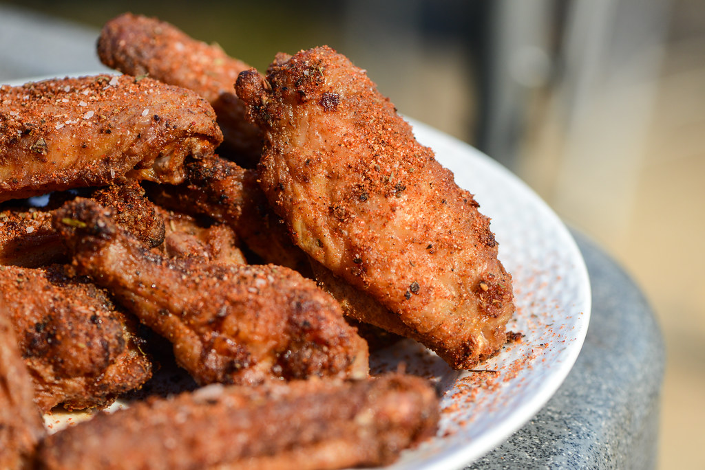

Spicy Dry Rub Wings

A flavorful Garlic Butter Shrimp and Rice recipe with a small kick of spice. Perfect for meal prep for your weekly lunch!
Ingredients:
- 1 lb (450g) shrimp, peeled and deveined
- 2 cups cooked rice
- 3 tablespoons butter
- 4 cloves garlic, minced
- 1 teaspoon paprika
- 1/2 teaspoon red pepper flakes (optional, for some heat)
- Salt and pepper to taste
- Fresh parsley, chopped (for garnish)
- Lemon wedges (optional)
Instructions:
- In a skillet, melt 2 tablespoons of butter over medium heat.
- Add minced garlic and cook for about 1-2 minutes until fragrant.
- Add shrimp to the skillet, season with paprika, red pepper flakes, salt, and pepper. Cook until the shrimp turn pink, usually 2-3 minutes per side.
- Remove the cooked shrimp from the skillet and set aside.
- In the same skillet, add the remaining butter and cooked rice. Stir well to combine and heat through.
- Return the cooked shrimp to the skillet and toss everything together until well combined.
- Garnish with chopped fresh parsley and serve with lemon wedges if desired.
Enjoy your delicious Gerlic Butter Shrimp and Rice!